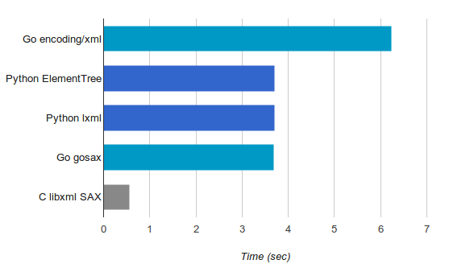

XML processing was all the rage 15 years ago; while it's less prominent these days, it's still an important task in some application domains. In this post I'm going to compare the speed of stream-processing huge XML files in Go, Python and C and finish up with a new, minimal module that uses C to accelerate this task for Go. All the code shown throughout this post is available in this GitHub repository the new Go module is here.
What does XML stream processing mean?
First, let's define the problem at hand in more detail. Roughly speaking, there are two ways we can process data from a file:
- Read the whole file into memory at once, and then proces the data in memory.
- Read the file in chunks, process each chuck, without having the whole data in memory at any given time.
In many ways, (1) is more convenient because we can easily go back to any part of the file. However, in some situations (2) is essential; specifically, when the file is very large. This is where stream processing comes in. If our input file is 500 GiB, we're unlikely to be able to read it into memory and have to process it in parts. Even for smaller files that would theoretically fit into RAM, it's not always a good idea to read them wholly; this dramatically increases the active heap size and can cause performance issues in garbage-collected languages.
The task
For this benchmark, I'm using xmlgen to create a 230 MiB XML file [1]. A tiny fragment of the file may look like this:
<?xml version="1.0" standalone="yes"?>
<site>
<regions>
<asia>
<item id="item0">
<location>United States</location>
<quantity>1</quantity>
<name>duteous nine eighteen </name>
<payment>Creditcard</payment>
...
</item>
</asia>
</regions>
</site>
The task is to find how many times "Africa" appears in the data of the <location> tag throughout the document.
Baseline - using the Go standard library
Let's start with a baseline implementation - using the standard library's encoding/xml package. While the package's Unmarshal mode will parse the whole file in one go, it can also be used to process XML token by token and selectively parse interesting elements. Here is the code:
package main
import (
"encoding/xml"
"fmt"
"io"
"log"
"os"
"strings"
)
type location struct {
Data string `xml:",chardata"`
}
func main() {
f, err := os.Open(os.Args[1])
if err != nil {
log.Fatal(err)
}
defer f.Close()
d := xml.NewDecoder(f)
count := 0
for {
tok, err := d.Token()
if tok == nil || err == io.EOF {
// EOF means we're done.
break
} else if err != nil {
log.Fatalf("Error decoding token: %s", err)
}
switch ty := tok.(type) {
case xml.StartElement:
if ty.Name.Local == "location" {
// If this is a start element named "location", parse this element
// fully.
var loc location
if err = d.DecodeElement(&loc, &ty); err != nil {
log.Fatalf("Error decoding item: %s", err)
}
if strings.Contains(loc.Data, "Africa") {
count++
}
}
default:
}
}
fmt.Println("count =", count)
}
I made sure to double check that the memory usage of this program stays bounded and low while processing a large file - the maximum RSS was under 7 MiB while processing our 230 MiB input file. I'm verifying this for all the programs presented in this post using /usr/bin/time -v on Linux.
This program takes 6.24 seconds to process the whole file and print out the result.
Python implementation
The first Python implementation uses the xml.etree.ElementTree module from the standard library:
import sys
import xml.etree.ElementTree as ET
count = 0
for event, elem in ET.iterparse(sys.argv[1], events=("end",)):
if event == "end":
if elem.tag == 'location' and elem.text and 'Africa' in elem.text:
count += 1
elem.clear()
print('count =', count)
The key here is the elem.clear() call. It ensures that each element gets discarded afer parsing it fully, so the memory usage won't grow linearly with the size of the file (unless the file is pathological). This program takes 3.7 seconds to process the whole file - much faster than our Go program. Why is that?
While the Go program uses 100% Go code for the task (encoding/xml is implemented entirely in Go), the Python program is using a C extension (most of ElementTree is written in C) wrapping a fast XML parser in C - libexpat. The bulk of the work here is done in C, which is faster than Go. The performance of encoding/xml is further discussed in this issue, though it's an old one and the performance has been somewhat optimized since then.
An alternative XML parsing library for Python is lxml, which uses libxml underneath. Here's a Python version using lxml:
import sys
from lxml import etree
count = 0
for event, elem in etree.iterparse(sys.argv[1], events=("end",)):
if event == "end":
if elem.tag == 'location' and elem.text and 'Africa' in elem.text:
count += 1
elem.clear()
print('count =', count)
This looks very similar to the previous version, and that's on purpose. lxml has an etree-compatible API to make transition from the standard library smoother. This version also takes around 3.7 seconds for our 230 MiB file.
The reason I'm including lxml here is that it will run faster than xml.etree.ElementTree when slurping the whole file, for our particular file size. I want to highlight that this is outside of the scope for my experiment, because I only care about streaming processing. The only way (that I'm aware of!) to successfully process a 500 GiB file with lxml would be by using iterparse.
How fast can it run?
Based on the measurements presented here, Go is about 68% slower than Python for parsing a large XML file in a streaming fashion. While Go usually compiles to a much faster code than pure Python, the Python implementations have the backing of efficient C libraries with which it's difficult to compete. I was curious to know how fast it could be, in theory [2].
To answer this question, I implemented the same program using pure C with libxml, which has a SAX API. I won't paste it wholly here because it's longer, but you can find the full source code on GitHub. It takes just 0.56 seconds to process our 230 MiB input file, which is very impressive given the other results, but also not very surprising. This is C, after all.
You may wonder - if lxml uses libxml underneath, why is it so much slower than the pure C version? The answer is Python call overhead. The lxml version calls back into Python for every parsed element, which incurs a significant cost [3]. Another reason is that my C implementation doesn't actually parse an element - it's just a simple event-based state machine, so there's less extra work being done.
Using libxml from Go
To recap where we are so far:
- Python libraries based on underlying C implementations are faster than pure Go.
- Pure C is much faster still.
We have two options: we can either try to optimize Go's encoding/xml package, or we can try to wrap a fast C library with Go. While the former is a worthy goal, it involves a large effort and should be a topic for a separate post. Here, I'll go for the latter.
Seaching around the web, I found a few wrappers around libxml. Two that seemed moderately popular and maintained are https://github.com/lestrrat-go/libxml2 and https://github.com/moovweb/gokogiri. Unfortunately, neither of these (or the other bindings I found) are exposing the SAX API of libxml; instead, they focus on the DOM API, where the whole document is parsed by the underlying library and a tree is returned. As mentioned above, we need the SAX interface to process huge files.
gosax
It's time to roll our own :-) I wrote the gosax module, which uses Cgo to call into libxml and exposes a SAX interface [4]. Implementing it was an interesting exercise in Cgo, because it requires some non-trivial concepts like registering Go callbacks with C.
Here's a version of our program using gosax:
package main
import (
"fmt"
"os"
"strings"
"github.com/eliben/gosax"
)
func main() {
counter := 0
inLocation := false
scb := gosax.SaxCallbacks{
StartElement: func(name string, attrs []string) {
if name == "location" {
inLocation = true
} else {
inLocation = false
}
},
EndElement: func(name string) {
inLocation = false
},
Characters: func(contents string) {
if inLocation && strings.Contains(contents, "Africa") {
counter++
}
},
}
err := gosax.ParseFile(os.Args[1], scb)
if err != nil {
panic(err)
}
fmt.Println("counter =", counter)
}
As you can see, it implements a state machine that remembers being inside a location element, where the character data is checked. This program takes 4.03 seconds to process our input file. Not bad! But we can do a bit better, and with a couple of optimizations I managed to bring it down to 3.68 seconds - about the same speed as the Python implementations!
IMHO the roughly similar run times here are a coincidence, because the Python programs are different from my approach in that they expose a higher-level API than pure SAX. Recall that iterparse returns a parsed element, and we can access its text attribute, etc. In gosax, we have to do this much more manually. Since the the cost of calls between Cgo and Go is rather high, there is an optimization opportunity here for gosax. We could do more work in C - parsing a full element, and returning it wholly to Go. This would move work from the Go side to the C side, as well as reduce the number of cross-language calls. But this is a task for another day.
Conclusion
Well, this was fun :-) There are 5 different implementations of the same simple task described here, in 3 different programming languages. Here is a summary of the speed measurements we got:
Python's performance story has always been - "it's probably fast enough, and in the rare cases where it isn't, use a C extension". In Go the narrative is somewhat different: in most cases, the Go compiler produces fairly fast code. Pure Go code is significantly faster than Python and often faster than Java. Even so, every once in a while it may be useful to dip into C or C++ for performance, and in these cases Cgo is a good approach.
It's obvious that encoding/xml needs some work w.r.t. performance, but until that happens - there are good alternatives! Leveraging the speed of libxml has been possible for the DOM API, and now is possible for the SAX API as well. In the long run, I believe that serious performance work on encoding/xml can make it go faster than the libxml wrappers because it would elimitate the high cost of C-to-Go calls.
| [1] | This size will easily fit in RAM, but it's good enough to provide a meaningful benchmarking duration. |
| [2] | When working on optimizations, it's often useful to know "the speed of light" of some computation. Say we want to optimize some function in our program. It's worth asking - how much faster will the program be if this function takes 0 time? If the overall change is tiny, the function is not worth optimizing, most likely. This is just a practical application of Amdahl's law. |
| [3] | We can test this hypothesis by timing how long it takes the non-streaming API in lxml to parse the same file. Since it parses the whole XML file in C before returning the parsed structure to Python, we expect the Python call overhead to be much smaller. Indeed, for files that fit into memory this is faster. But once again, in this post we return our attention to streaming APIs - assuming this is our only choice for gigantic files. |
| [4] | gosax is very minimal, only providing the most common SAX callbacks. The decision to create a new module was just for convenience and speed; the more correct thing would have likely been to contribute to one of the existing libxml wrappers. I don't see gosax as production-quality at this stage - I just hacked it together to be able to experiment for this post. |